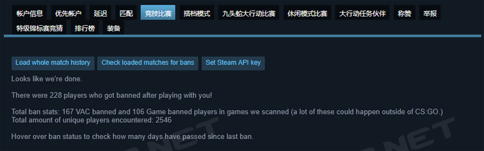
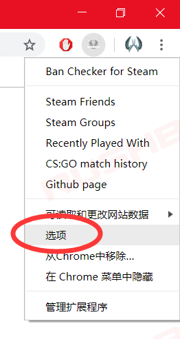
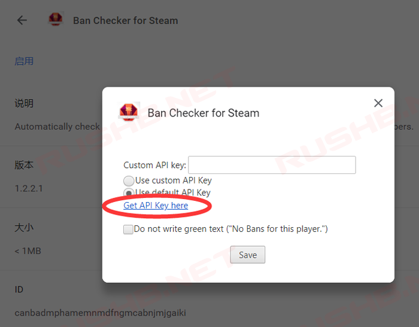
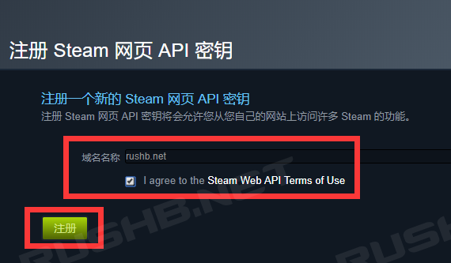
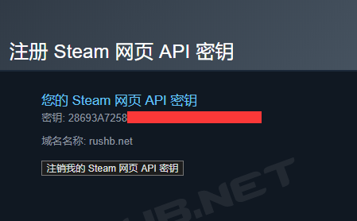
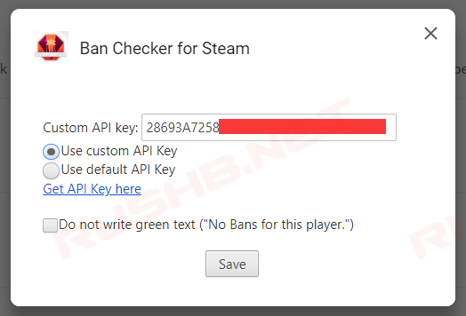
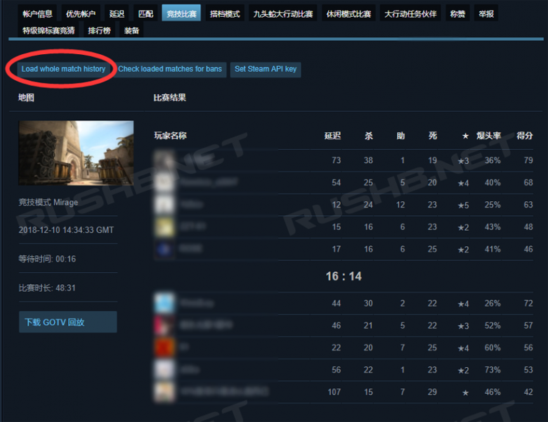
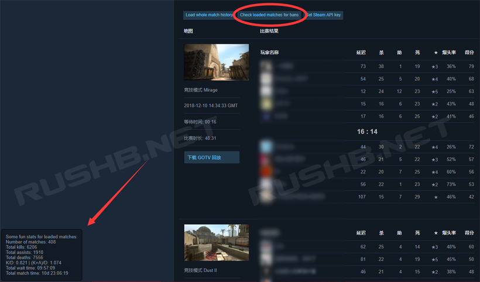
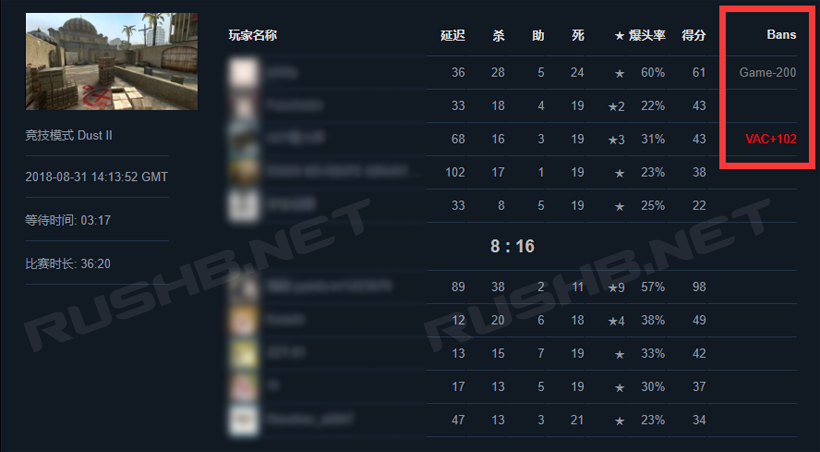

CSGO RushB中文网
CSGO RushB中文网
*更新：为了回收服务器空间，Steam个人游戏数据删除了玩家2017年11月前的CSGO匹配记录，即玩家只能查询到在此之后的匹配记录，所以本文不再适用。
自CSGO推出已经有6个年头，玩家也遇到形形色色的对手或队友。随着CSGO个人游戏数据功能的推出，让玩家能够查询到至今遇到的所有队友和对手，配合浏览器插件/扩展Ban Checker for Steam，我们可以查询这些玩家中有多少被封禁（包括VAC和监管），以下是详细教程：

注意：
本文会使用到Steam API 密匙（Key），为保证Steam帐户安全，请不要泄露密匙，建议查询完成后注销密匙。
本教程查询仅包括CSGO官服匹配（竞技模式），不包括社区服及第三方对战平台，结果仅供参考，不确保准确性。
被封禁的玩家未必是在和你一起比赛时作弊，也有可能是在之后。
1、在浏览器上安装插件/扩展：Ban Checker for Steam
*若Chrome无法访问，可从百度网盘下载，提取码: pbhi
*如果你之前已经安装过此插件，请确保是最新版1.2.2.1。
插件下载完成后并启用，进入下一步骤。
2、注册Steam API 密匙（Key）
*如果不注册密匙，则无法查询所有玩家。
首先进入Ban Checker for Steam选项页面，可以从下图进入，或者从扩展程序管理页面进入。

在Ban Checker for Steam选项页面，点击“Get API Key here”。

然后会进入Steam API 密钥（Key）注册页面，如图，输入“域名名称”（随意起），勾选“I agree to the Steam Web API Terms of Use”，点击“注册”绿色按钮。

API Key注册完成后，将密匙（Key）复制，返回Ban Checker for Steam选项页面。

在Ban Checker for Steam选项页面，将复制的密匙粘贴到输入框“Custom API key”内，并勾选“ ”，然后点击“Save”保存。

以上，准备步骤完成。
3、查询至今遇到有多少玩家，其中又有多少被封禁。
首先，进入Counter-Strike: Global Offensive – 个人游戏数据 – 竞技比赛页面
页面地址：https://steamcommunity.com/my/gcpd/730/?tab=matchhistorycompetitive
在此页面中，我们可以查询到至今所有竞技模式比赛记录列表，配合插件功能以进一步查询，点击比赛列表上方的“Load whole match history”加载比赛记录，，会提示正在读取数据，花费时间取决于玩家比赛次数，越多越久（站长我打了400场比赛，花费了大概不到2分钟）

等待页面左下角的数据读取完成后，点击“Check loaded matches for bans”,开始分析记录并查询封禁玩家，同样需要花些时间。

查询完成后，会在页面中显示以下信息：
翻译如下：
Looks like we’re done.
看起来我们已经完成了。
There were 228 players who got banned after playing with you!
你遇到的所有玩家中有228名被封禁！
Total ban stats: 167 VAC banned and 106 Game banned players in games we scanned (a lot of these could happen outside of CS:GO.)
封禁数据：其中167名被VAC封禁，还有106名被游戏封禁（游戏封禁可能是监管封禁，也有可能是CSGO以外的游戏封禁）。
Total amount of unique players encountered: 2546
你遇到的玩家总数为2546名。
Hover over ban status to check how many days have passed since last ban.
将鼠标悬停在封禁状态上以显示自封禁以来经过了多少天。
即除了以上结果，下来比赛列表，会看到封禁的玩家会显示封禁状态（VAC或Game）

以上教程结束，若查询完成后需要注销密匙，回到Steam API 密钥（Key）注册页面注销即可。
另外，Ban Checker for Steam插件还能够查询好友列表及Steam组成员的封禁状态。